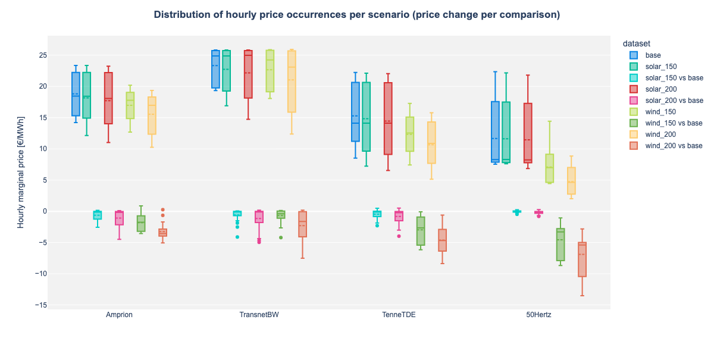

MESQUAL 102: Advanced Data Fetching Techniques¶
Introduction¶
Building on the StudyManager fundamentals, this notebook demonstrates MESQUAL's advanced data fetching and transformation capabilities. These techniques significantly streamline multi-scenario analysis by leveraging pandas' power while abstracting away common boilerplate code.
MESQUAL's data handling utilities provide efficient ways to: - Work with multi-index DataFrames from scenario and comparison collections - Filter data using model properties - Aggregate data across complex dimensions - Combine scenarios and comparisons in unified analyses
Setup¶
import os
import logging
import warnings
import pandas as pd
import pypsa
from IPython.display import Image
import plotly.express as px
from mesqual import StudyManager
from mesqual.utils.pandas_utils import flatten_df, prepend_model_prop_levels, filter_by_model_query
from mesqual.utils.plotly_utils.plotly_theme import PlotlyTheme
from mesqual_pypsa import PyPSADataset
# Directory setup
os.chdir(os.path.dirname(os.path.dirname(os.path.dirname(os.getcwd()))))
# Configuration for cleaner output
logging.basicConfig(level=logging.ERROR)
warnings.filterwarnings("ignore", category=DeprecationWarning)
pd.set_option('display.max_columns', 6)
pd.set_option('display.width', 1000)
PlotlyTheme().apply()
# Same study setup as in 101, only this time it's from a method so we can re-use it
from studies.study_01_intro_to_mesqual.scripts.setup_study_manager import get_scigrid_de_study_manager
study = get_scigrid_de_study_manager()
Working with Multi-Index DataFrames¶
Fetching data across multiple scenarios naturally creates multi-index DataFrames. Let's examine and transform these structures:
Calculating Averages Per Scenario¶
df_price_change = study.comp.fetch('buses_t.marginal_price')
df_price_change_mean = df_price_change.mean().unstack('dataset')
print(df_price_change_mean)
dataset solar_150 vs base solar_200 vs base wind_150 vs base wind_200 vs base
Bus
1 0.210744 0.230623 -6.644124 -7.292750
10 0.250483 0.214094 -6.220950 -8.214383
100 -0.712512 -1.279986 -1.500320 -3.403255
100_220kV -0.717737 -1.288928 -1.496799 -3.412561
101 0.144366 0.100898 -6.115556 -7.510163
... ... ... ... ...
96_220kV -0.173702 -0.405244 -4.028766 -4.810695
97 -0.694532 -1.244591 -1.385540 -2.557227
98 0.166729 0.132677 -6.155495 -7.608517
99 -0.711075 -1.284553 -1.324793 -3.213848
99_220kV -0.711609 -1.284904 -1.338588 -3.229785
[585 rows x 4 columns]
The result is a DataFrame showing the average price change per bus for each scenario comparison.
Combining Scenarios and Comparisons¶
To analyze both raw values and deltas in one operation:
df_price_all = study.scen_comp.fetch('buses_t.marginal_price')
print(df_price_all.head())
type scenario ... comparison
dataset base ... wind_200 vs base
Bus 1 10 100 ... 98 99 99_220kV
snapshot ...
2011-01-01 00:00:00 -0.439753 5.772135 23.120287 ... -1.818518 0.104774 0.108749
2011-01-01 01:00:00 -0.578449 6.100599 22.531275 ... -2.017386 -0.806122 -0.815207
2011-01-01 02:00:00 -0.582087 6.071084 22.106222 ... -2.007054 -2.256636 -2.262590
2011-01-01 03:00:00 -0.596210 6.139415 21.498113 ... -2.147870 -3.477572 -3.480850
2011-01-01 04:00:00 -0.609622 6.164469 20.391625 ... -2.151701 -5.055950 -5.051421
[5 rows x 5265 columns]
This DataFrame contains both the scenario data and comparison data, distinguished by the 'type' level in the MultiIndex.
Unified Analysis¶
We can perform operations on this unified structure:
df_price_all_mean = df_price_all.mean().droplevel('type').unstack('dataset').sort_index(axis=1)
print(df_price_all_mean)
dataset base solar_150 solar_150 vs base ... wind_150 vs base wind_200 wind_200 vs base
Bus ...
1 7.676257 7.887001 0.210744 ... -6.644124 0.383507 -7.292750
10 10.994609 11.245092 0.250483 ... -6.220950 2.780226 -8.214383
100 21.880995 21.168483 -0.712512 ... -1.500320 18.477740 -3.403255
100_220kV 21.977638 21.259901 -0.717737 ... -1.496799 18.565077 -3.412561
101 8.245265 8.389631 0.144366 ... -6.115556 0.735102 -7.510163
... ... ... ... ... ... ... ...
96_220kV 13.212272 13.038570 -0.173702 ... -4.028766 8.401577 -4.810695
97 21.288071 20.593539 -0.694532 ... -1.385540 18.730844 -2.557227
98 8.576509 8.743238 0.166729 ... -6.155495 0.967991 -7.608517
99 22.222045 21.510970 -0.711075 ... -1.324793 19.008197 -3.213848
99_220kV 22.202444 21.490835 -0.711609 ... -1.338588 18.972659 -3.229785
[585 rows x 9 columns]
This creates a table with average prices and deltas side by side, sorted alphabetically by dataset name.
Integrating Model Data with Time Series¶
A powerful MESQUAL capability is the integration of static model data with time series data.
Accessing Model Data¶
buses_model_df = study.scen.get_dataset('base').fetch('buses')
print(buses_model_df)
v_nom type x ... ref location control_area
Bus ...
1 220.0 9.522576 ... POINT (9.52258 52.36041) TenneTDE
2 380.0 9.113210 ... POINT (9.11321 52.54385) TenneTDE
3 380.0 9.389745 ... POINT (9.38975 52.02631) TenneTDE
4 380.0 9.125266 ... POINT (9.12527 52.53826) TenneTDE
5 380.0 10.366275 ... POINT (10.36627 52.28465) TenneTDE
... ... ... ... ... ... ... ...
404_220kV 220.0 8.232094 ... POINT (8.23209 47.55614) TransnetBW
413_220kV 220.0 8.673717 ... POINT (8.67372 49.29044) TransnetBW
421_220kV 220.0 9.091835 ... POINT (9.09184 49.29462) TransnetBW
450_220kV 220.0 7.416708 ... POINT (7.41671 51.45705) Amprion
458_220kV 220.0 7.419464 ... POINT (7.41946 51.45751) Amprion
[585 rows x 21 columns]
Filtering by Model Properties¶
Let's filter our time series to include only high voltage buses (v_nom >= 380 kV):
filtered_price_df = filter_by_model_query(df_price_all, buses_model_df, 'v_nom >= 380')
print(filtered_price_df.head())
type scenario ... comparison
dataset base ... wind_200 vs base
Bus 10 100 101 ... 97 98 99
snapshot ...
2011-01-01 00:00:00 5.772135 23.120287 1.358870 ... -1.095655 -1.818518 0.104774
2011-01-01 01:00:00 6.100599 22.531275 1.347486 ... 0.510926 -2.017386 -0.806122
2011-01-01 02:00:00 6.071084 22.106222 1.344766 ... -1.208963 -2.007054 -2.256636
2011-01-01 03:00:00 6.139415 21.498113 1.376138 ... -2.351651 -2.147870 -3.477572
2011-01-01 04:00:00 6.164469 20.391625 1.405119 ... -5.122186 -2.151701 -5.055950
[5 rows x 2592 columns]
The filter_by_model_query utility applies pandas query syntax to filter time series based on model properties.
Prepending Model Properties¶
We can add model properties as additional index levels:
price_with_control_area = prepend_model_prop_levels(filtered_price_df, buses_model_df, 'control_area')
print(price_with_control_area.head())
control_area 50Hertz Amprion 50Hertz ... TenneTDE 50Hertz Amprion
type scenario scenario scenario ... comparison comparison comparison
dataset base base base ... wind_200 vs base wind_200 vs base wind_200 vs base
Bus 10 100 101 ... 97 98 99
snapshot ...
2011-01-01 00:00:00 5.772135 23.120287 1.358870 ... -1.095655 -1.818518 0.104774
2011-01-01 01:00:00 6.100599 22.531275 1.347486 ... 0.510926 -2.017386 -0.806122
2011-01-01 02:00:00 6.071084 22.106222 1.344766 ... -1.208963 -2.007054 -2.256636
2011-01-01 03:00:00 6.139415 21.498113 1.376138 ... -2.351651 -2.147870 -3.477572
2011-01-01 04:00:00 6.164469 20.391625 1.405119 ... -5.122186 -2.151701 -5.055950
[5 rows x 2592 columns]
This operation adds the 'control_area' property from the bus model as a new level in our multi-index DataFrame.
Aggregating by Model Properties¶
Now we can efficiently aggregate by control area:
price_by_control_area = price_with_control_area.mean().groupby(level=['control_area', 'dataset']).mean().unstack('control_area')
print(price_by_control_area)
control_area 50Hertz Amprion TenneTDE TransnetBW
dataset
base 11.657645 18.804042 15.284996 23.333147
solar_150 11.628050 18.179100 14.830030 22.741469
solar_150 vs base -0.029595 -0.624942 -0.454965 -0.591678
solar_200 11.448025 17.720580 14.463570 22.177620
solar_200 vs base -0.209620 -1.083462 -0.821425 -1.155527
wind_150 7.087738 16.973092 12.332776 22.664264
wind_150 vs base -4.569907 -1.830950 -2.952220 -0.668883
wind_200 4.765799 15.546364 10.669218 21.040701
wind_200 vs base -6.891846 -3.257678 -4.615778 -2.292446
Sophisticated Visualization Example¶
Let's demonstrate these techniques with a more sophisticated visualization. We'll create a boxplot showing the distribution of hourly prices by control area and scenario:
buses_model_df = study.scen.get_dataset('base').fetch('buses')
data = study.scen_comp.fetch('buses_t.marginal_price')
data = filter_by_model_query(data, buses_model_df, query='v_nom >= 380')
data = prepend_model_prop_levels(data, buses_model_df, 'control_area')
data = data.T.groupby(level=['dataset', 'control_area']).mean().T
data_flat = flatten_df(data)
fig = px.box(
data_frame=data_flat,
x='control_area',
color='dataset',
y='value',
category_orders={'control_area': ['Amprion', 'TransnetBW', 'TenneTDE', '50Hertz']},
labels={'value': 'Hourly marginal price [€/MWh]'},
)
fig.update_traces(boxmean=True)
fig.update_layout(title='<b>Distribution of hourly price occurrences per scenario (price change per comparison)</b>', width=1200)
fig.update_xaxes(title=None)
# Save and display the image (using this only so that the picture is shown on GitHub)
image_path = study.export_path('price_boxplot.png')
fig.update_layout(height=600, width=1200)
fig.write_image(image_path)
Image(image_path)
# fig.show() # Use this instead when you are running locally and want to have full interactivity in the plot

Advanced Transformation Pipeline¶
Let's trace through a complete data transformation pipeline that demonstrates MESQUAL's efficiency:
# Start with raw data
df_raw = study.scen_comp.fetch('buses_t.marginal_price')
# Filter to high voltage buses
buses_model_df = study.scen.get_dataset('base').fetch('buses')
df_filtered = filter_by_model_query(df_raw, buses_model_df, 'v_nom >= 380')
# Add control area information
df_with_areas = prepend_model_prop_levels(df_filtered, buses_model_df, 'control_area')
# Calculate hourly area prices
hourly_area_prices = df_with_areas.T.groupby(['dataset', 'control_area']).mean().T.unstack()
# Reshape for analysis
area_price_stats = hourly_area_prices.groupby(['dataset', 'control_area']).agg(['mean', 'std', 'min', 'max'])
print(area_price_stats)
mean std min max
dataset control_area
base 50Hertz 11.657645 4.898477 7.536946 22.367118
Amprion 18.804042 3.200822 14.203696 23.352252
TenneTDE 15.284996 4.839524 8.528858 22.238178
TransnetBW 23.333147 2.799360 19.340758 25.851732
solar_150 50Hertz 11.628050 4.882195 7.616330 22.173180
Amprion 18.179100 3.853877 12.146565 23.361021
TenneTDE 14.830030 5.304740 7.223666 22.119134
TransnetBW 22.741469 3.428135 16.896716 25.850474
solar_150 vs base 50Hertz -0.029595 0.171920 -0.479044 0.261827
Amprion -0.624942 0.918766 -2.567606 0.157824
TenneTDE -0.454965 0.770981 -2.298001 0.484883
TransnetBW -0.591678 1.017996 -4.115210 0.065954
solar_200 50Hertz 11.448025 4.873367 6.854107 21.823334
Amprion 17.720580 4.270065 11.023602 23.250576
TenneTDE 14.463570 5.558940 6.534276 22.052944
TransnetBW 22.177620 4.143174 14.744938 25.850372
solar_200 vs base 50Hertz -0.209620 0.247018 -0.812198 0.268009
Amprion -1.083462 1.470448 -4.480616 0.099372
TenneTDE -0.821425 1.220437 -3.984937 0.524086
TransnetBW -1.155527 1.658060 -4.964659 0.177578
wind_150 50Hertz 7.087738 2.572691 4.442086 14.417100
Amprion 16.973092 2.468944 12.684241 20.197305
TenneTDE 12.332776 3.101766 7.424682 17.277102
TransnetBW 22.664264 3.346420 18.083046 25.879449
wind_150 vs base 50Hertz -4.569907 2.687352 -8.674692 -1.054884
Amprion -1.830950 1.360582 -3.565816 0.881127
TenneTDE -2.952220 2.143834 -6.159601 -0.075203
TransnetBW -0.668883 1.014195 -4.205612 0.135676
wind_200 50Hertz 4.765799 2.160594 2.005988 8.848858
Amprion 15.546364 3.183015 10.261299 19.354840
TenneTDE 10.669218 3.488676 5.135119 15.777315
TransnetBW 21.040701 5.060456 12.374443 25.935143
wind_200 vs base 50Hertz -6.891846 2.991629 -13.518259 -2.810534
Amprion -3.257678 1.231673 -5.057282 0.263154
TenneTDE -4.615778 2.107637 -8.368801 -0.593846
TransnetBW -2.292446 2.495500 -7.521899 0.191369
What would normally take dozens of lines of data manipulation code is condensed into a few expressive operations that maintain the relationships between different types of data.
Key Takeaways¶
- Unified Analysis: Work with scenarios and comparisons in the same analytical framework
- Model and Time-Series Data Fetching: Unified framework for fetching model and time-series data
- Useful Integration Utilities: MESQUAL provides tools like
filter_by_model_queryandprepend_model_prop_levelsthat efficiently establish relationships between model properties and time series data and provide frequently needed filtering and property mapping features
These capabilities make MESQUAL particularly powerful for complex multi-scenario analyses that would otherwise require extensive custom code.